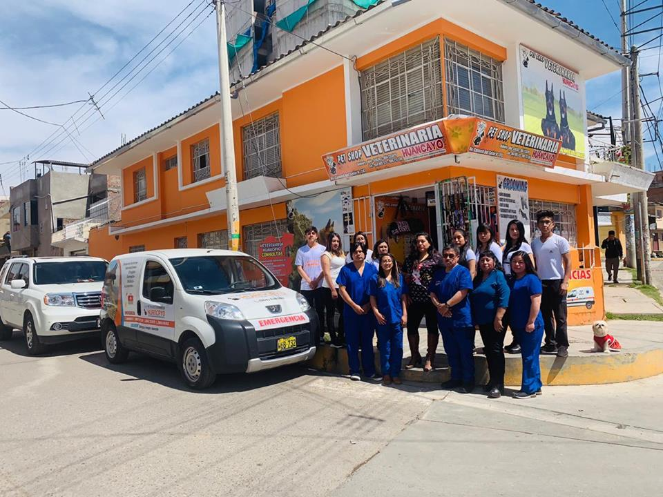

Veterinaria Pet-Shop dispone de consultas equipadas para valorar de forma metódica y completa a tu mascota. Además contamos con los medios y los conocimientos necesarios para que nuestro paciente se sienta cómodo y seguro durante la consulta. Estamos capacitados para un manejo correcto y amigable. Nuestro objetivo es que tu mascota siempre cuente con un bienestar físico y mental durante la exploración y diagnóstico. Así mismo realizamos el seguimiento de el estado de salud de tu mascota hasta su alta.
